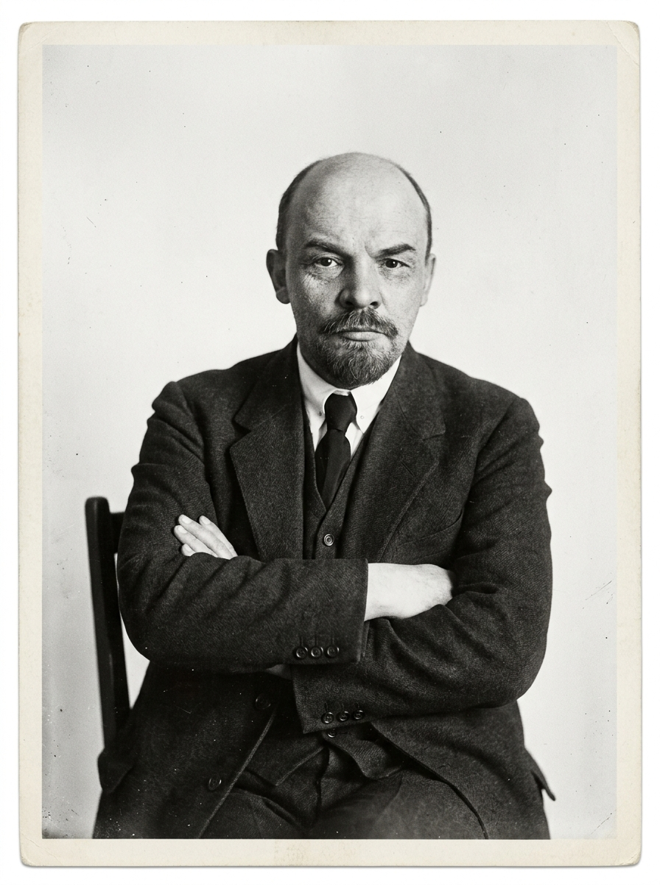

Chủ nghĩa duy vật biện chứng
2.2. Phép biện chứng duy vật & Nguyên lý về sự phát triển
Khám phá tư duy biện chứng duy vật, phân biệt Biện chứng khách quan vs Chủ quan và Nguyên lý về sự phát triển trong nhận thức & thực tiễn.
Tư Duy Biện Chứng
Mối liên hệ & Sự vận động không ngừng
1. Tình huống mở đầu & 2 Video thực tế
Video 1: Tình huống mở đầu
Mở đầuVideo 2: Lý giải tình huống
Phân tíchMột sự vật không tồn tại cô lập
Từ tình huống cây héo, hãy nhìn rộng hơn điều chúng ta thấy trước mắt.
3. Khái niệm Biện chứng & Tư duy Vận động
Khái niệm Biện chứng là gì?
- Xem xét sự vật, hiện tượng trong mối liên hệ phổ biến, tác động và chuyển hóa lẫn nhau.
- Nhìn nhận thế giới trong trạng thái vận động, biến đổi và phát triển không ngừng.
- Là phương pháp tư duy đối lập trực tiếp với phương pháp siêu hình (xem xét sự vật cô lập, tĩnh tại).
Yêu cầu quan trọng trong nhận thức
Góc nhìn biện chứng toàn diện
Mọi sự vật, hiện tượng phải luôn được đánh giá và quan sát trong mối liên hệ – sự vận động – sự biến đổi thực tế chứ không được nhìn phiến diện hay cố định.
Không chỉ cái cây…
Cùng thử áp dụng cách nhìn này vào một tình huống rất quen thuộc.
= THIẾU Ý THỨC?
Ta đang thấy kết quả hay đã hiểu cả quá trình?
Trước khi kết luận, hãy xem thêm những mối liên hệ có thể dẫn đến việc đi trễ.
5. Nhìn đa chiều ≠ Biện minh
Hiểu đầy đủ một hiện tượng không có nghĩa là phủ nhận trách nhiệm, mà là tránh kết luận vội vàng.
Nhìn đa chiều là gì?
- Xem xét nhiều mối liên hệ
- Nhìn cả quá trình dẫn đến kết quả
- Tránh kết luận từ một biểu hiện đơn lẻ
Không có nghĩa là gì?
- Không phủ nhận trách nhiệm
- Không chấp nhận mọi lý do
- Không dùng hoàn cảnh để bao che sai sót
Điểm quan trọng là không vội kết luận trước khi xem xét đầy đủ những mối liên hệ và quá trình dẫn đến sự việc.
Cùng 1 hiện tượng – Hai cách nhìn
Nhìn đơn giản, tách biệt
Chỉ nhìn kết quả hiện tại → dễ kết luận nhanh.
Nhìn theo mối liên hệ và quá trình
Xem cả quá trình hình thành kết quả → có cơ sở để đánh giá đầy đủ hơn.
Những mối liên hệ và sự vận động ấy tồn tại trong chính thế giới bên ngoài; còn việc quan sát, nhận ra và suy nghĩ về chúng diễn ra trong tư duy con người. Vậy sự vận động của thế giới khách quan và sự phản ánh của nó trong tư duy có giống nhau hoàn toàn không?
→ Từ đây, chúng ta chuyển sang: BIỆN CHỨNG KHÁCH QUAN và BIỆN CHỨNG CHỦ QUAN.6. Biện chứng khách quan & Ví dụ cái cây
Khái niệm Biện chứng khách quan
Là sự vận động, phát triển và những mối liên hệ vốn có của chính thế giới vật chất (tự nhiên & xã hội). Nó tồn tại độc lập, không phụ thuộc vào việc con người có nhận thức được nó hay không.
Ví dụ 1: Thực tế Cái Cây
Ví dụ 2: Cước Grab ngày mưa
7. Biện chứng chủ quan & Diễn tiến Tư duy
Khái niệm Biện chứng chủ quan
Thế giới vật chất vận động thì tư duy con người cũng không đứng yên. Biện chứng chủ quan là sự phản ánh biện chứng khách quan vào trong đầu óc con người, giúp tư duy vận động để "bắt nhịp" và mô phỏng lại thực tế.
Diễn tiến Tư duy Cái cây
Diễn tiến Tư duy Grab
8. Tóm tắt & So sánh 2 loại hình (Chốt vấn đề)
Để chốt lại sự khác biệt, chỉ cần nhớ:
Biện chứng khách quan
Là hiện thực cái cây đang héo đi vì vô số yếu tố môi trường tác động lẫn nhau ngoài đời thực. (Thuộc về thế giới vật chất).
Biện chứng chủ quan
Là sự biến đổi trong logic suy nghĩ của chúng ta: từ chỗ nghĩ đơn giản là 'thiếu nước', chuyển sang tư duy đa chiều để hiểu đúng bản chất sự việc. (Thuộc về thế giới tinh thần, nhận thức).
Mối quan hệ phản ánh
Sự phản ánh trong tư duy (chủ quan) luôn cố gắng bám sát sự vận động của thế giới (khách quan) để giúp con người nhận thức đúng đắn.
9. Nguyên lý về sự phát triển
Sự vật không chỉ vận động — trong những điều kiện nhất định, nó còn hình thành những trạng thái và chất mới.
Phát triển là gì?
Phát triển là quá trình vận động theo khuynh hướng đi lên:
- Từ thấp đến cao
- Từ kém hoàn thiện đến hoàn thiện hơn
- Từ chất cũ đến chất mới ở trình độ cao hơn
Tính chất của phát triển
Ý nghĩa phương pháp luận
Không chỉ hiện tại mà phải thấy khả năng biến đổi
Tạo điều kiện cho cái mới, cái tiến bộ
Không áp đặt một con đường cho mọi sự vật
cái mới + Diễn ra
khách quan – phổ biến – đa dạng + Đòi hỏi
quan điểm phát triển
9. Phép biện chứng là gì?
Tách rõ 2 chữ cho dễ hiểu
"Biện chứng"
Cách sự vật tồn tại và cách ta nhìn nó – là hiện tượng khách quan trong tự nhiên và xã hội.
Thêm chữ "PHÉP" → cao hơn 1 bậc
"Phép biện chứng" là cả một học thuyết, một hệ thống lý luận khoa học đàng hoàng.
Định nghĩa (Ăng-ghen)
Phép biện chứng là khoa học về những quy luật chung nhất của sự vận động và phát triển — trong cả tự nhiên, xã hội và tư duy.
Nói mộc mạc
Phép biện chứng là bộ "quy tắc tư duy" giúp ta nhìn mọi thứ trong sự liên hệ và vận động, thay vì nhìn tách rời, cứng nhắc.

11. Phép biện chứng duy vật – Bản hoàn chỉnh nhất
Lịch sử hình thành 3 hình thức biện chứng
① Biện chứng tự phát (Cổ đại)
→ Đúng nhưng chưa chứng minh được. Chỉ dựa trên quan sát trực quan, chưa có cơ sở khoa học vững chắc.
② Biện chứng duy tâm (Hegel)
→ Có biện chứng nhưng cho rằng "ý niệm" có trước. Đặt tư duy lên trên thực tế – sai lầm căn bản.
③ Biện chứng DUY VẬT (Mác – Ăng-ghen)
→ Giữ lối biện chứng của Hegel, đặt trên nền duy vật (vật chất có trước). Đây là bản hoàn chỉnh nhất.

"Phép biện chứng là học thuyết về sự thống nhất của các mặt đối lập."
— V.I. Lênin (hạt nhân của phép biện chứng)
Mâu thuẫn tạo ra sự vận động
- Cái cây: vừa cần nước lại vừa có thể bị úng nước → chính mâu thuẫn đó buộc ta chăm đúng cách.
- Học tập: áp lực vừa đủ giúp tiến bộ, nhưng quá tải lại gây kiệt sức.
→ Chính các mặt đối lập làm cho sự vật luôn vận động và thay đổi.
12. Đặc điểm & Vai trò của Phép biện chứng duy vật
Đặc điểm nổi bật
Thống nhất hữu cơ giữa hai thứ:
- Thế giới quan duy vật – vật chất có trước.
- Phương pháp luận biện chứng – nhìn trong liên hệ, vận động.
Vai trò
Công cụ tư duy khoa học
Cho ta phương pháp tư duy khoa học → nhìn đúng thì làm đúng. Tránh được các sai lầm do nhìn phiến diện, tĩnh tại.
"Linh hồn sống" của chủ nghĩa Mác
Được xem là "linh hồn sống" của chủ nghĩa Mác – bộ óc phương pháp, phần quan trọng nhất của cả học thuyết.
9. Quay lại cái cây – Hai cách tư duy đối lập
Cùng một cái cây héo — hai cách tư duy, hai kết quả
Cách nhìn SAI (Siêu hình)
Thấy lá héo → kết luận ngay "thiếu nước" → tưới thêm. Nhưng đất vốn đã úng, tưới thêm làm rễ thối, cây chết nhanh hơn.
Siêu hình = nhìn sự vật cô lập, tách rời, chỉ thấy một mặt "lá héo" mà bỏ qua đất, rễ, ánh sáng. Nôm na: "thấy cây mà không thấy rừng".
Cách nhìn ĐÚNG (Biện chứng) — 3 bước
9. Nội dung PBCDV – Hai nguyên lý cơ bản
Nội dung của phép biện chứng duy vật được khái quát trong 2 nguyên lý nền tảng — trả lời cho hai câu hỏi: sự vật tồn tại thế nào và biến đổi theo hướng nào?
① Nguyên lý về mối liên hệ phổ biến
Mọi sự vật, hiện tượng đều liên hệ, tác động qua lại — không cái gì tồn tại cô lập, tách rời.
② Nguyên lý về sự phát triển
Thế giới không đứng yên mà luôn vận động, biến đổi theo khuynh hướng đi lên — đây là nội dung chính hôm nay.
10. Phát triển là gì?
Khái niệm
Phát triển là quá trình vận động đi lên: từ thấp → cao, đơn giản → phức tạp, kém hoàn thiện → hoàn thiện hơn.
Phát triển ≠ Vận động
Vận động là mọi biến đổi nói chung (có cả thụt lùi, tuần hoàn). Phát triển chỉ là khuynh hướng ĐI LÊN của vận động → không phải mọi vận động đều là phát triển.
11. Phát triển đi theo đường "xoáy ốc"
Phát triển không đi theo đường thẳng tắp, mà quanh co, có lúc thụt lùi tạm thời — nhưng khuynh hướng chung vẫn là đi lên. Cái mới ra đời trên cơ sở kế thừa cái cũ ở mức cao hơn → hình ảnh đường xoáy ốc.
Ví dụ: hành trình học tập
Có kỳ điểm cao, có kỳ điểm tụt, đôi lúc chán nản — nhưng nhìn cả quá trình, kiến thức và năng lực vẫn tiến lên. Mỗi lần vấp là bước lên một "vòng xoáy" cao hơn.
Ví dụ: công nghệ
Đời sản phẩm sau kế thừa đời trước rồi hoàn thiện hơn — không xoá sạch mà nâng lên tầm cao mới.
12. Ba tính chất của sự phát triển
Sự phát triển mang 3 tính chất
Tính khách quan
Nguồn gốc nằm bên trong sự vật (giải quyết mâu thuẫn nội tại), không phụ thuộc ý muốn con người.
VD: hạt gặp đủ nước – đất – nắng thì tự nảy mầm, dù ta có mong hay không.
Tính phổ biến
Diễn ra ở mọi lĩnh vực: tự nhiên, xã hội và tư duy.
VD: sinh vật tiến hoá, xã hội đi lên, nhận thức con người ngày càng sâu sắc.
Tính đa dạng, phong phú
Mỗi sự vật có cách và tốc độ phát triển khác nhau, tuỳ không gian – thời gian – điều kiện.
VD: cùng gieo hạt, cây đủ nắng lớn nhanh, cây thiếu sáng còi cọc.
13. Ý nghĩa phương pháp luận – Quan điểm phát triển
Từ nguyên lý phát triển, ta rút ra quan điểm phát triển khi xem xét và giải quyết mọi vấn đề:
Đặt trong sự vận động
Xem xét sự vật trong quá trình vận động, phát triển; vạch ra xu hướng biến đổi tương lai, không nhìn tĩnh tại.
Ủng hộ cái mới
Trân trọng, ủng hộ cái mới, cái tiến bộ; chống bảo thủ, trì trệ, định kiến.
Lịch sử – cụ thể
Đánh giá sự vật theo từng giai đoạn, gắn với điều kiện cụ thể; thấy được tính quanh co, phức tạp.
Liên hệ bản thân
Học tập, rèn luyện không ngừng; đánh giá người khác theo cả quá trình, cho cơ hội thay đổi và tiến bộ.
Lô Tô Biện Chứng Duy Vật
Rút thẻ tình huống ngẫu nhiên và chọn xem tình huống thuộc loại hình Biện Chứng Khách Quan hay Biện Chứng Chủ Quan!
Nhấn nút "Rút Thẻ Lô Tô" bên dưới để bắt đầu thử thách phân loại tình huống biện chứng!
Giải thích chi tiết:
MARIO GIẢI CỨU CÔNG CHÚA
Ứng Dụng AI
Các công cụ AI hỗ trợ xây dựng nội dung web & trò chơi.
Công Cụ AI Đã Sử Dụng (AI Usage)
-
Gemini AI / ChatGPT
Hỗ trợ tổng hợp cấu trúc bài thuyết trình từ tài liệu Doc, biên soạn kịch bản câu hỏi Lô Tô & game Mario.
-
Vanilla JS & CSS Glassmorphic Engine
Xây dựng giao diện web tĩnh responsive, tích hợp Mario Game Canvas & Lô Tô Quiz Game.